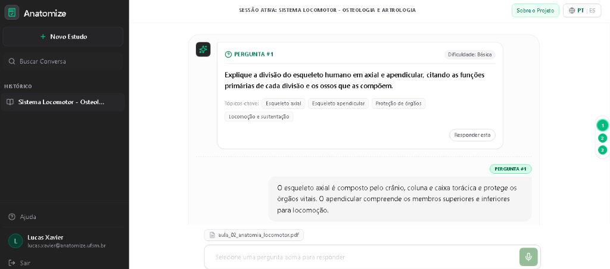

Envie o PDF da sua aula de Anatomia Sistêmica, responda por voz pelo celular ou computador e receba na hora avaliação de 0 a 10, pontos a melhorar e a resposta ideal.

Tudo o que você precisa para simular sua avaliação oral
Envie apostilas ou capítulos em PDF. A IA analisa o documento e gera perguntas cobrindo todo o conteúdo.
Responda pelo microfone do celular ou notebook, treinando a fala técnica e a argumentação sem julgamentos.
Feedback imediato com nota objetiva, pontos dominados e apontamento de omissões anatômicas.
Acesse a resposta ideal de referência para aprender a estruturar o vocabulário e a linha de raciocínio correta.
Vídeo de Demonstração
Demonstração de uma situação concreta de uso do Anatomize e como o produto apoia o aprendizado oral de anatomia.
Espaço Reservado para o Vídeo de Demonstração
Sobre o Projeto e a Parceria COIL
Iniciativa binacional desenvolvida no âmbito do programa COIL.
Equipe de desenvolvimento
Desenvolvedores: Carlos Velozo, Leandro Oliveira, Lucas Xavier e Murilo Block.
Curso: Ciência da Computação
Clientes
Estudantes: Bárbara Acevedo e Kiara Cabrales.
Curso: Medicina Veterinaria